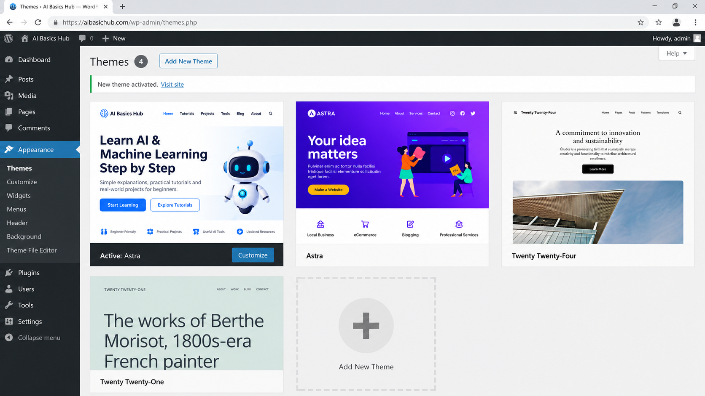
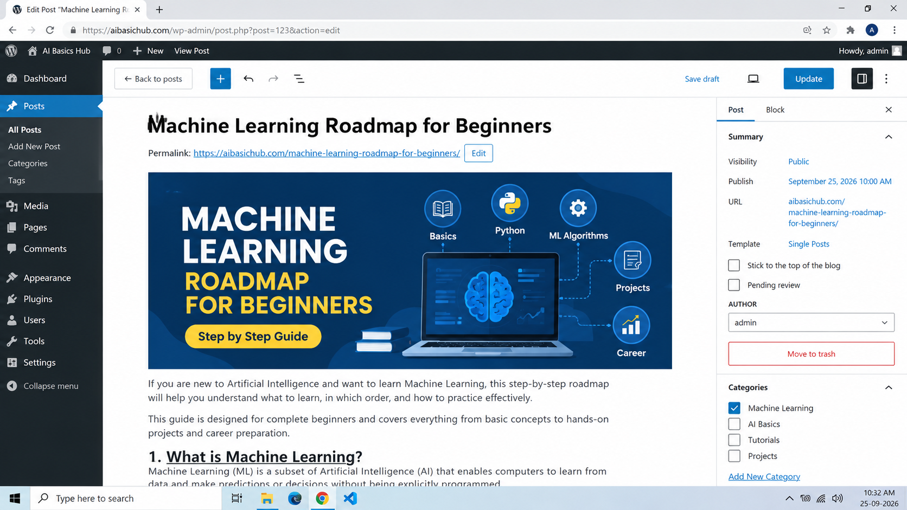
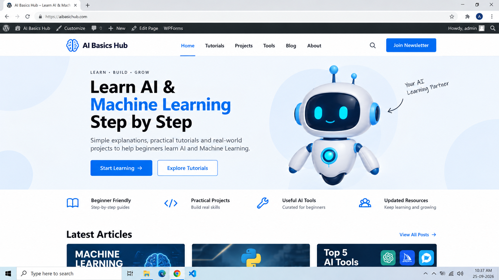
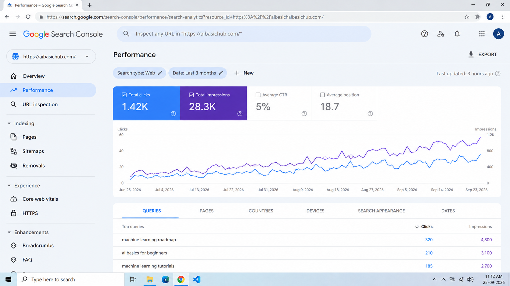
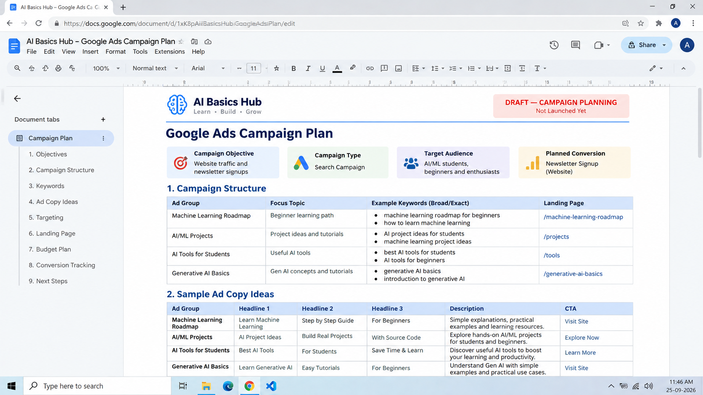
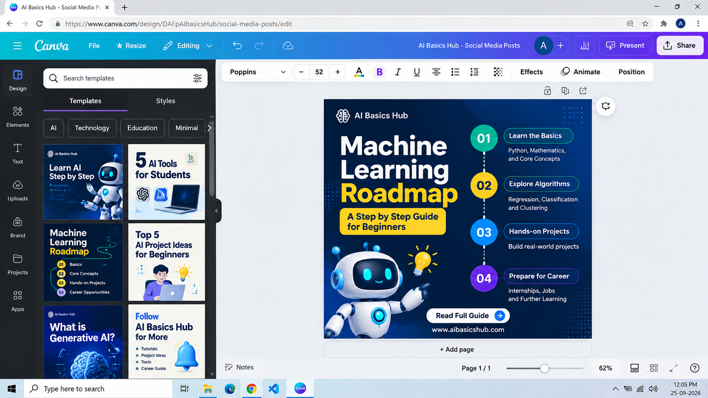
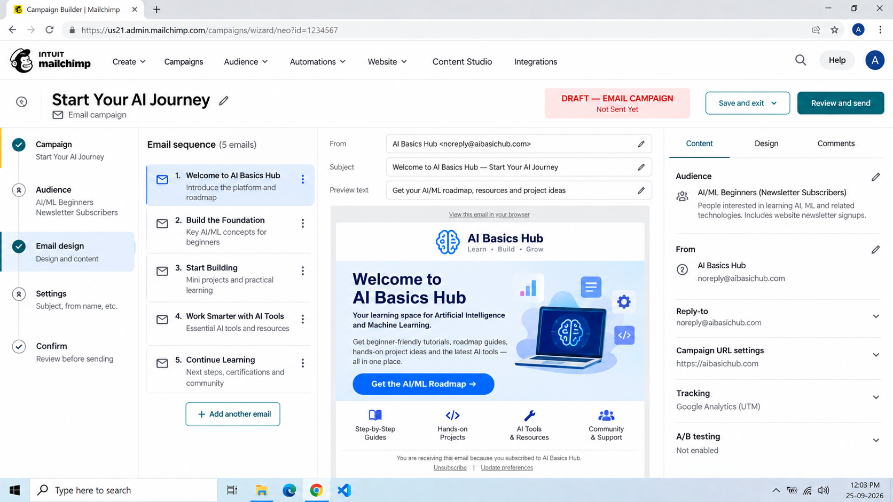
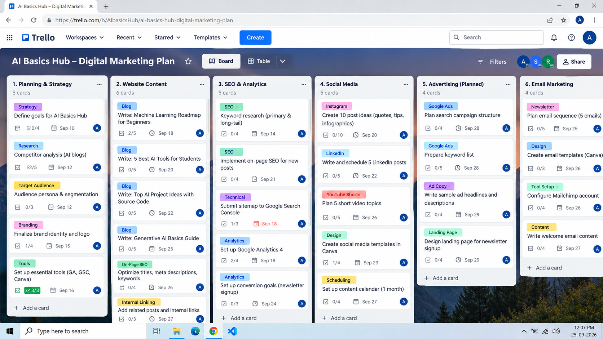

Project concept
AI Basics Hub is an educational platform designed to make AI, machine learning and emerging technology easier for beginners through practical, structured resources.
DIGITAL MARKETING INTERNSHIP PROJECT
A practical digital-marketing project for an AI education platform, covering content strategy, WordPress, SEO, social media, campaign planning, analytics, email marketing and reporting.
PROJECT OVERVIEW
AI Basics Hub is an educational platform designed to make AI, machine learning and emerging technology easier for beginners through practical, structured resources.
Students and AI beginners, with secondary segments including developers and working professionals seeking practical AI learning resources.
Learn AI and emerging technology through simple, practical and beginner-friendly resources.
STRATEGY
| Area | Key measures | Purpose |
|---|---|---|
| SEO | Clicks, impressions, CTR, average position | Organic visibility and search performance |
| Website | Users, sessions, engagement | Content consumption and UX |
| Social | Reach, engagement rate, clicks | Awareness and traffic generation |
| Paid search | CTR, CPC, conversions | Campaign planning and acquisition |
| Open rate, click rate, conversions | Nurture and retention |
IMPLEMENTATION
Website architecture, homepage, learning sections, content pages, themes, plugins and publishing workflow.
AI tools for ideation, copy, content optimization, social planning, creative production and workflow support.
Keyword clusters, on-page optimization, Search Console setup, internal linking, link-building planning and local SEO considerations.
Instagram, Facebook and LinkedIn content pillars, platform roles, a four-week content calendar and Canva creatives.
Google Ads campaign structure, keyword groups, sample ad copy, landing-page mapping and conversion planning.
GA4 event framework, KPI reporting, segmentation and the five-email “Start Your AI Journey” nurture sequence.
PROJECT EVIDENCE
Evidence images in this repository are reconstructed project artifacts. They document the project design and workflow; they are not presented as historical platform metrics where the campaign was not actually launched.








REPORTING INTEGRITY
FULL PROJECT RECORD
Includes phase-by-phase work, assignments, implementation notes, evidence mapping and limitations.